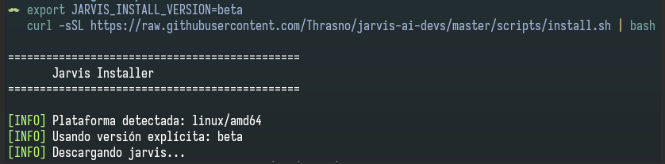

Ruta orientativa de instalación
Pasos sugeridos, no plazos ni resultados observados. Detente si necesitas soporte.
- Preparar: confirma terminal, red y agente elegido. Criterio observable: puedes abrir la terminal e identificar la integración prevista.
- Instalar: ejecuta el comando documentado. Criterio observable: la terminal reconoce
jarviso registras el fallo. - Configurar: abre
jarvis. Criterio observable: completas el asistente o identificas dónde se detuvo.
1. Antes de empezar
Para quien utiliza Ubuntu o Linux y quiere preparar un agente compatible mediante la CLI. Necesitas una terminal con curl y bash, conexión para descargar la versión de producción publicada y el agente que vayas a configurar (por ejemplo, Claude Code u OpenCode). Consulta con tu equipo qué integración y credenciales te corresponden; no compartas claves ni captures datos privados.
Si utilizas Ubuntu bajo WSL, sigue estos comandos dentro de la distribución Linux, no en PowerShell. No se afirma aquí una certificación independiente de WSL. Para Windows nativo, consulta la guía de PowerShell.
2. Hito sugerido: instalar
En la terminal, ejecuta el instalador documentado para la última versión de producción publicada. Revisa el origen del script según la política de tu organización. Este comando no acredita por sí solo una instalación limpia verificada.
curl -sSL https://raw.githubusercontent.com/Thrasno/jarvis-ai-devs/master/scripts/install.sh | bashOpcional: canal beta (no producción). Si tu equipo te ha indicado probar la beta, usa estos comandos en la terminal en lugar del anterior. La variable selecciona la versión pública beta; no es el procedimiento de instalación estable.
export JARVIS_INSTALL_VERSION=beta
curl -sSL https://raw.githubusercontent.com/Thrasno/jarvis-ai-devs/master/scripts/install.sh | bashSegún la documentación, el instalador instala en /usr/local/bin. Comprueba que esa ubicación esté en el PATH; si hay problemas de permisos o descarga, no cambies la política del sistema a ciegas: consulta con soporte.

Alcance de la evidencia: la captura muestra solo el inicio de la descarga beta en Linux/amd64. No acredita una instalación completa ni el resultado del instalador estable; las capturas del asistente tampoco prueban esos resultados.
3. Hito sugerido: primera configuración
Ejecuta jarvis. En una instalación nueva se espera el asistente de configuración; en otra ya configurada se abre la reconfiguración con valores previos. Elige solo las integraciones que efectivamente utilizas (por ejemplo, Claude Code u OpenCode) y sigue las opciones que muestre tu versión. No hay un conjunto universal de pantallas ni una selección obligatoria para todos los equipos.
jarvisLas siguientes capturas proceden de una sesión en WSL/Linux y muestran el asistente compartido. Son ejemplos de opciones visibles en esa sesión, no pruebas de instalación o verificación específicas de Windows ni de Ubuntu/Linux. Las opciones pueden variar según la versión y las integraciones detectadas.